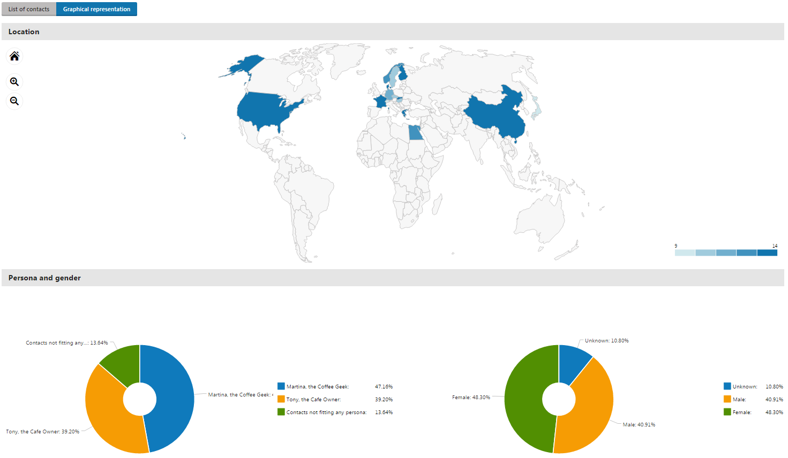

Viewing the email report insights
The report insights that are available for tracked marketing emails enable you to track which of your contacts opened the emails, clicked at least one link in the emails, and unsubscribed from the emails you sent. Moreover, you can see where these contacts come from, which persona they are fitting, what their gender is, and how old they are.
To view the report insights for individual marketing emails:
Open the Email marketing application on the Email feeds tab.
Edit (
 ) an email campaign or a newsletter containing sent emails.
) an email campaign or a newsletter containing sent emails.On the Emails tab, edit (
) the marketing email you want to view the reports for.Switch to the Reports -> Overview tab.
Click the values displayed in the columns of the following categories:
Category
Column
Engagement
Unique opens – the number of contacts who opened the email.
Unique clicks – the number of contacts who clicked at least one link in the email.
Contact loss
Unsubscriptions – the number of contacts who unsubscribed from the email.
The report insights for each value open a Contact demographics page in a separate browser tab.
Note
If you lack sufficient permissions to inspect individual contacts, you will be redirected to the dashboard when opening individual reports.
To correct this issue, contact your administrator and request he sets the permissions for the Contact management module to Read for your role or account.
Kentico EMS required
Features described on this page require the Kentico EMS license.
Working with the contact demographics page
On the Contact demographics page, you can switch between the List of contacts and Graphical representation views.
The List of contacts view allows you to see the real contacts hidden behind the numbers in the email marketing reports:

List of contacts tab
Clicking View contact details ( ) displays information about individual contacts gathered in contact profiles.
) displays information about individual contacts gathered in contact profiles.
The Graphical representation view allows you to better understand who the recipients of your marketing emails are:

Graphical representation tab
Displaying the data in the charts
Filter the data displayed in the charts by clicking the individual data series in the legend.
Switching to the United States map
Click the United States in the world map to view a detailed breakdown of the US contact demographic by state.